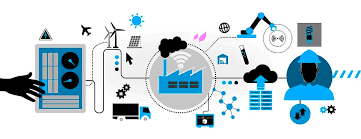
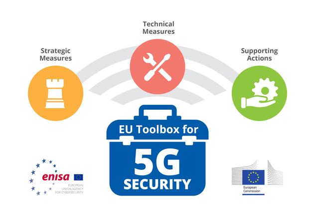

L'aspect technologique
Les multiples facettes de la 5g
L’essor de la 5g laisse à prévoir de maintes améliorations au sein du monde technologique actuel. Cette dernière vient succéder à la 4g comme celle-ci eu succéder à la 3g, etc. Toutefois, malgré l’arrivée de ce progrès technologique fabuleux, les infrastructures mises en place pour la 4g sont incompatibles avec la 5g. C’est un retour à zéro qui attend les développeurs. Elle nécessite donc la mise en place de nouvelles antennes propre à la 5g avec la fréquence adéquate.
Les apports de la 5G
Elle promet donc d’apporter une évolution notamment des loisirs et services vidéo avec une qualité d’image plus importante encore. Augmentant de plus les possibilités de la réalité virtuelle. Du point de vue de l’emploi, elle facilitera et fluidifiera les formations à distances ainsi que le télétravail. D’autant plus que le très important débit qu’elle propose rendra plus rapide les transferts de données quels qu’il soient. L’apport de ces multiples perfectionnement en rend d’autant plus évidente l’imposante compétition entre les entreprises à l’échelle de l’économie internationale.
Ses Faiblesses
Cependant, il existe également de multiples faiblesses à cette nouvelle technologique. D’une part de multiples nations redoutent le coût d’investissement très important que demande la mise en place des infrastructures liés à la 5g. D’autres part, elle soulève un bon nombre de problème interne. Notamment vis-à-vis de la sécurité. En effet, Certains chercheurs ont mis en évidence plus d’une dizaine de vulnérabilité existante sur le réseau 5g. L’ensemble des connexions 5g se trouvant être virtuelle, des craintes apparaissent quand à l’absence de contrôle physique. La plupart des chercheurs soulignent la priorité de la sécurité nécessaire à la 5g.
En conséquents, l’UE travaille en coordination à l’élaboration d’une toolbox (boîte à outil) visant à sécuriser le réseau au travers de multiples indicateurs ayant pour but d’évaluer l’état d’avancement du travail effectué.
Toolbox
La 5g peut donc s’avérer être la clé d’une expansion technologique ainsi qu’un accroissement de l’autonomie de travail une fois cette dernière maîtrisé et régulée.